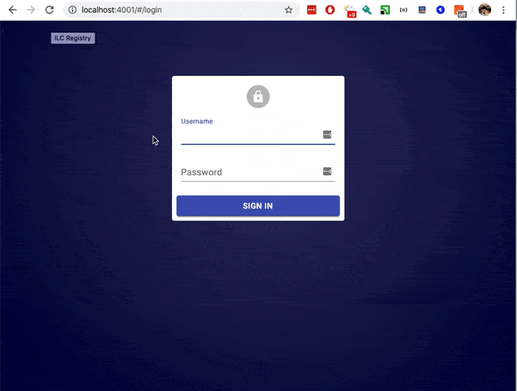

ILC Registry⚓︎
The Registry provides UI and REST API to publish, update, and retrieve micro frontends, templates, and routes configuration.
The Registry is available at the 4001 port by default (use http://127.0.0.1:4001 for a locally launched ILC).
Authentication and authorization⚓︎
Currently, Registry supports authentication only. All authenticated entities will receive a full set of permissions.
The following authentication providers are supported:
- OpenID Connect. Turned off by default.
- Locally configured login/password. Default credentials:
root/pwd. - Locally configured Bearer token for API machine-to-machine access. Default credentials:
Bearer cm9vdF9hcGlfdG9rZW4=:dG9rZW5fc2VjcmV0orBearer root_api_token:token_secretafter base64 decoding.
You can change default credentials via Registry UI, in the Auth entities page, or via API.
OpenID Configuration⚓︎
To configure OpenID:
- Open Registry UI.
- Go to the Settings page.
- Find keys that start with
auth.openid.*.
Sample configuration (values are JSON-encoded):
| key | value |
|---|---|
baseUrl |
"https://ilc-registry.example.com/" |
auth.openid.enabled |
true |
auth.openid.discoveryUrl |
"https://adfs.example.com/adfs/" |
auth.openid.clientId |
"ba34c345-e543-6554-b0be-3e1097ddd32d" |
auth.openid.clientSecret |
"XXXXXX" |
OpenID Connect returnURL should be specified at provider in the following format: {baseUrl}/auth/openid/return
User Interface⚓︎

API⚓︎
Currently there is no documentation for API endpoints. As an alternative, you can use Network tab in your browser's developer tools
to see how UI communicates with API. You can also explore code starting from the /registry/server/app.ts file.
Updating JS/CSS URLs during micro frontends deployment⚓︎
It is a common practice to store JS/CSS files of the micro frontend apps at CDN using unique URLs. For example,
https://site.com/layoutfragments-ui/app.80de7d4e36eae32662d2.js.
By following this this approach, you need to update links to the JS/CSS bundles in the Registry after each deployment.
To do this, there are the following options (at least):
- Manually via UI (not recommended)
- Using Registry API (see API section above)
- Using App Assets discovery mechanism
When registering micro frontend in the ILC Registry, it is possible to set a file for the "Assets discovery url" that will be periodically fetched by the Registry. The idea is that this file will contain actual references to JS/CSS bundles and be updated on CDN right after every deployment.
https://site.com/layoutfragments-ui/assets-discovery.json
{
"spaBundle": "https://site.com/layoutfragments-ui/app.80de7d4e36eae32662d2.js",
"cssBundle": "./app.81340a47f3122508fd76.css", // It is possible to use relative links that will be resolved against the manifest URL
"dependencies": {
"react": "https://unpkg.com/react@16.13.1/umd/react.production.min.js"
}
}